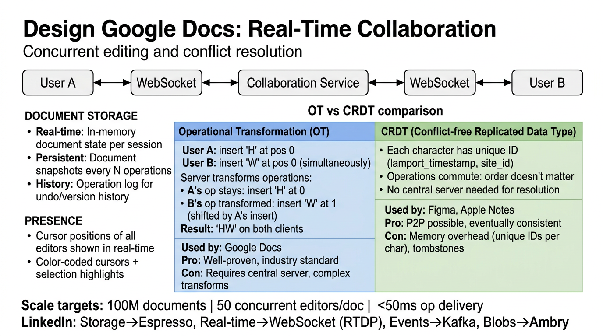

A deep dive into real-time collaborative editing — operational transformation, CRDTs, presence, conflict resolution, and building an editor that scales to millions of simultaneous users.
Google Docs enables multiple users to edit a shared document simultaneously from anywhere in the world, with changes appearing in real time for all participants. The core challenge is conflict resolution: when two users type at the same position at the same time, the system must produce a consistent, predictable result for everyone.
The system is composed of four major subsystems that work together to provide seamless real-time collaboration.
The brain of real-time editing. Receives operations from clients over WebSocket, applies the transformation algorithm (OT or CRDT), and broadcasts the transformed operations to all other participants. Maintains the authoritative document state in memory.
Stateful Per-Document Affinity
Handles persistent storage of document content, metadata, and the operation log. Periodically snapshots the in-memory state to durable storage. Serves document loads and version history queries.
Espresso / Spanner Blob Store
Tracks which users have a document open, their cursor positions, text selections, and typing indicators. Broadcasts presence updates at a lower priority than document operations to save bandwidth.
Ephemeral State Pub/Sub
Manages persistent WebSocket connections from clients. Handles authentication, heartbeats, reconnection, and message routing. Routes messages to the correct Collaboration Service instance based on document ID.
Connection Pooling Sticky Sessions

Each document has affinity to a single Collaboration Service instance. This avoids distributed consensus on every keystroke. If the instance fails, a new one is elected and it replays from the operation log.
| Concern | Strategy |
|---|---|
| Document → Server mapping | Consistent hashing on document ID; stored in a coordination service (ZooKeeper / etcd) |
| Reconnection | Client sends its last known revision; server replays missed operations |
| Heartbeat | Ping/pong every 30s; close connection after 3 missed heartbeats |
| Horizontal scaling | Each server handles ~10K documents; add servers and rebalance with consistent hashing |
This is the most technically challenging aspect of collaborative editing. When two users edit the same region at the same time, the system must ensure convergence — all clients end up with the same document. There are two main approaches: Operational Transformation (OT) and CRDTs.
OT is the approach used by Google Docs. The core idea: when two concurrent operations conflict, transform one against the other so that applying them in either order produces the same result.
All document changes are expressed as a sequence of three primitive operations:
insert(position, char) — insert a character at a given positiondelete(position) — delete the character at a given positionretain(count) — skip forward (no change) — used in compound operationsStarting document: "ABCD"
User A inserts "X" at position 1 → insert(1, "X")
User B inserts "Y" at position 3 → insert(3, "Y")
Without transformation, applying A then B: "AXBCYD" — but B’s position 3 is now wrong because A shifted characters right.
Transformation: Since A’s insert position (1) < B’s insert position (3), B’s position shifts right by 1:
transform(insert(1,"X"), insert(3,"Y")) → insert(1,"X"), insert(4,"Y") Result: "AXBCD" → "AX BCYD" = "AXBCYD" ✓
Starting document: "ABCD"
User A inserts "X" at position 1 → insert(1, "X")
User B deletes at position 2 → delete(2) (removes "C")
transform(insert(1,"X"), delete(2)) → insert(1,"X"), delete(3) // B's delete shifts right because A inserted before it Result: "AXBCD" → "AXBCD" = "AXBD" ✓
The server maintains a linear revision history. Each operation from a client includes the revision it was based on.
function handleOperation(clientOp, clientRevision):
serverRevision = currentRevision()
// Transform against all operations that happened
// between clientRevision and serverRevision
for each serverOp in ops[clientRevision .. serverRevision]:
clientOp = transform(clientOp, serverOp)
// Apply the transformed operation
apply(clientOp)
broadcast(clientOp)
appendToLog(clientOp)
incrementRevision()
The server acts as the single source of truth. It serializes all operations into a total order, transforming late-arriving operations against anything it missed.
Cursor positions are treated as metadata attached to operations. When an operation is transformed, cursor positions are transformed too:
insert happens before the cursor → shift cursor right by 1delete happens before the cursor → shift cursor left by 1CRDTs take a fundamentally different approach: instead of transforming operations, they design the data structure itself so that concurrent operations always commute — order doesn’t matter.
Every character in the document gets a globally unique, immutable ID that encodes its position relative to its neighbors:
Document: "HELLO"
Character → ID (simplified)
H → (site1, clock1)
E → (site1, clock2)
L → (site1, clock3)
L → (site1, clock4)
O → (site1, clock5)
Insert "X" between E and L:
X → ID chosen between (site1,clock2) and (site1,clock3)
X.id = (site2, clock1) with position between E.id and L.id
Because IDs are unique and positions are defined relative to neighbors rather than by integer index, two users inserting at the “same position” will produce different IDs that sort deterministically.
Popular CRDT algorithms for text: RGA (Replicated Growable Array), LSEQ, Logoot, Yjs (YATA algorithm).
| Aspect | Operational Transformation (OT) | CRDT |
|---|---|---|
| Central server | Required — server serializes operations into total order | Not required — can work peer-to-peer |
| Consistency model | Server determines canonical order; clients converge via transformation | Mathematically guaranteed convergence; operations commute |
| Complexity | Transform functions are error-prone; O(n²) pairs for n operation types | Data structure is complex; simpler operation handling |
| Memory overhead | Low — document is a plain string/tree | High — each character carries a unique ID and tombstones for deletes |
| Offline support | Difficult — long-diverged histories require many transformations | Natural — operations merge cleanly regardless of divergence time |
| Latency | Very low with a nearby server (<50ms) | Low for P2P; can be higher for complex merges |
| Proven at scale | Google Docs, Google Wave (discontinued) | Figma, Apple Notes, Yjs ecosystem |
| Undo/redo | Complex — must transform undo against concurrent ops | Simpler — inverse operations commute naturally |
In an interview, pick OT with a central server for a Google Docs clone (proven, lower memory, Google’s own choice). Pick CRDT if the interviewer emphasizes offline-first, peer-to-peer, or decentralized requirements. Know trade-offs of both.
The storage layer must support both the real-time editing path (fast reads/writes) and the historical versioning path (browse any past version).
The Collaboration Service holds the current document state in memory for active documents. This enables sub-millisecond operation application. Documents are evicted from memory after all editors disconnect (with a grace period).
Every operation is appended to a durable, ordered log. This is the system of record. Operations are small (typically <100 bytes) and written sequentially, making this very fast.
Full document snapshots are saved every N operations (e.g., every 100) or every T seconds (e.g., every 30s). Snapshots enable fast document loading — load snapshot + replay recent ops instead of replaying entire history.
Named versions (auto-saved checkpoints + user-created versions) reference specific operation log positions. Restoring a version creates a new operation that replaces the document content.
// Document metadata
{
doc_id: "d_abc123",
title: "Q4 Planning",
owner: "user_42",
created_at: "2024-01-15T09:00:00Z",
permissions: { "user_42": "owner", "user_99": "editor", ... },
current_rev: 4827
}
// Operation log entry
{
doc_id: "d_abc123",
revision: 4827,
user_id: "user_99",
timestamp: "2024-01-15T14:32:01.234Z",
ops: [retain(42), insert("hello"), retain(1085)]
}
// Snapshot
{
doc_id: "d_abc123",
revision: 4800,
content: "<rich-text-tree-serialized>",
size_bytes: 48210
}
The operation log grows unboundedly without compaction. Strategies:
Presence is what makes collaborative editing feel alive. Users need to see who else is in the document, where they’re editing, and what they’re selecting.
// Presence update message
{
user_id: "user_99",
doc_id: "d_abc123",
cursor_pos: 1247,
selection: { start: 1240, end: 1260 }, // null if no selection
color: "#E91E63", // unique per user
name: "Alice Chen",
avatar_url: "https://...",
is_typing: true,
last_seen: "2024-01-15T14:32:05Z"
}
Each user’s cursor is rendered as a colored line with a name label in every other client’s editor. Implementation details:
When a user selects text, the selection range is broadcast to all peers and rendered as a translucent colored overlay matching the user’s cursor color. Selections must also be transformed when remote operations shift character positions.
A small animated indicator (pulsing dot or subtle highlight) appears near a user’s cursor when they are actively typing. Implementation:
is_typing = true on first keystroke; reset a 2-second debounce timer on each keystrokeis_typing = false| Property | Design Choice |
|---|---|
| State lifetime | Ephemeral — in-memory only, not persisted to disk |
| Delivery guarantee | Best-effort (latest-wins); missed updates are replaced by the next one |
| Channel | Same WebSocket as document ops, but lower priority; can be dropped under backpressure |
| User disconnect | Remove presence after 10s of no heartbeat; notify other users “Alice left” |
| Scale consideration | For a 50-editor document, presence is ~50 updates/sec; lightweight |
How each Google Docs component maps to LinkedIn’s infrastructure:
| Google Docs Component | LinkedIn Equivalent | Notes |
|---|---|---|
| Document Storage (metadata, content) | Espresso | LinkedIn’s distributed document store; supports secondary indexes, change capture, and strong consistency per partition |
| WebSocket Gateway | RTDP / Play Framework WebSocket | Real-Time Data Platform handles persistent connections; Play Framework powers LinkedIn’s real-time messaging and notification push |
| Operation Log / Event Streaming | Kafka | All operations appended to Kafka topics; provides durable, ordered, replayable event log with exactly-once semantics |
| Document Snapshots / Blob Storage | Ambry | LinkedIn’s distributed blob store for large immutable objects; ideal for document snapshots, images, and attachments |
| Presence Service | RTDP Pub/Sub | Real-time presence can piggyback on RTDP’s pub/sub channels; same infrastructure as “active now” indicators in LinkedIn Messaging |
| Access Control / Permissions | ACL Service | Centralized authorization service; enforces who can view, edit, or share a document |
| Search / Indexing | Galene | LinkedIn’s search engine; can index document content for full-text search across all user documents |
A: Use Operational Transformation with a central collaboration server. Each document has affinity to a single server instance. The server serializes all operations into a total order. When a client sends an operation based on an old revision, the server transforms it against all intervening operations before applying and broadcasting it. Clients apply operations optimistically (local-first) and reconcile when the server acknowledges.
A: For a Google Docs-style system with a server, OT. It has lower memory overhead (no per-character IDs), is proven at Google’s scale, and the central server simplifies consistency. CRDTs shine in peer-to-peer or offline-heavy scenarios (e.g., mobile note apps) where there’s no reliable server, but the added metadata cost and complexity of garbage-collecting tombstones make them less ideal for a centralized system.
A: The client maintains a local operation log while offline. On reconnect, it sends its buffered operations to the server along with its last known revision. The server transforms these against all operations that happened during the offline period. With OT, long offline periods can require many transformations (O(n×m) where n = local ops, m = remote ops). A hybrid approach: if offline too long, fall back to a diff-merge on the full document text.
A: Cursor positions are indices into the document. When any operation (local or remote) is applied, all remote cursor positions are transformed using the same OT transform function. Insert before a cursor shifts it right; delete before a cursor shifts it left. Cursors are rendered as colored carets with a name tooltip, and their updates are throttled to 10–20 Hz to save bandwidth.
A: The document’s operation log is durably stored (in Kafka or a database). A new Collaboration Service instance takes ownership of the document (via leader election or consistent hashing failover), loads the latest snapshot from blob storage, and replays operations from the log to reconstruct in-memory state. Clients reconnect via the WebSocket Gateway, send their last known revision, and the new server replays missed operations to them. Typical recovery time: <5 seconds.
A: Most documents are not actively being edited at any time. Only active documents (with open editors) are loaded into Collaboration Service memory. Consistent hashing distributes active documents across a fleet of servers. Document metadata lives in a partitioned database (Espresso). Snapshots live in blob storage (Ambry). The operation log lives in Kafka, partitioned by document ID. Adding more Collaboration Service instances and rebalancing handles increased load.
A: Every operation is appended to a durable log before being acknowledged to the client. Periodic snapshots provide recovery checkpoints. The log + snapshot combination means the system can recover from any failure. For additional safety, the log is replicated across data centers. Client-side, operations are retried until acknowledged, and a local IndexedDB cache provides a last-resort recovery layer.